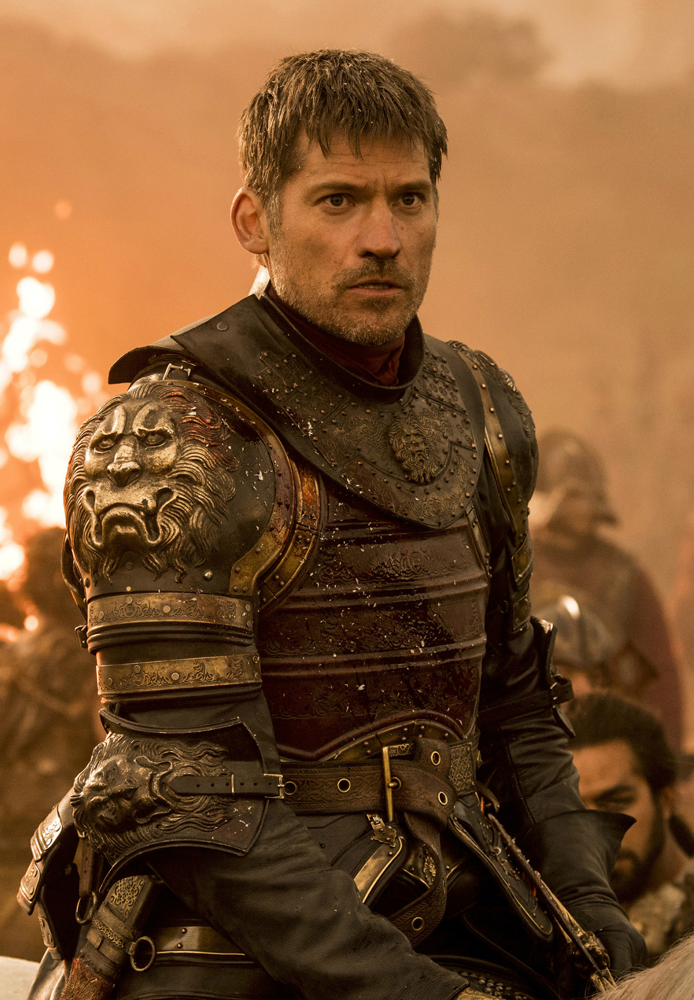

Джейме Ланнистер

Сир Джейме Ланнистер — представитель великого дома Ланнистеров. Ста
рший сын Тайви
на Ланнистера, брат-близнец Серсеи и старший брат Тириона. С детства Джейме
состоит в близ
ких отношениях с Серсеей, которая родила ему троих детей — Джоффри, Мирцеллу
и Томмена.
Джейме являлся лордом-командующим Королевской гвардии при королях Джоффри и
Томмене. Ныне
командует армией Ланнистеров.
Отец Джейме воспитывал своих детей на том принципе, что жестокость — это гла
вная добродете
ль. Хотя Джейме часто ведёт себя аморально и жестоко, он является одним из н
емногих Ланнис
теров, для которых честь и слово — это не пустой звук. Во многом это связано
с его службой
в Королевской гвардии. Там он приобрёл важных друзей, но разочаровался в св
оих идеалах, у
видев те зверства, что творил Безумный Король, тогда как другие рыцари ничег
о не предприни
мали, чтобы предотвратить это. После этих событий Джейме предстаёт разочаров
анным в том ми
ре, где он живёт: нет греха и нет добродетели, боги не награждают хороших и
не наказывают
плохих — всё это выдумки и лицемерие. Более того, из-за убийства короля, кот
орого, согласн
о своим обетам, Джейме должен был защищать, ему больше не доверяют, презренн
о кличут «Царе
убийцей», что в глубине души задевает Джейме.
Помимо убийства короля, Дж
ейме известен
своей привлекательной внешностью, заносчивым поведением и умением сражаться
в бою.
К большому разочарованию Серсеи и Тайвина, Джейме не рвётся в правители, счи
тая, что это н
е его путь.
Хоть Джейме и является старшим сыном Тайвина Ланнистера, он
не может унас
ледовать Утёс Кастерли, так как вступление в Королевскую гвардию лишает прав
а на получение
наследства. Себя он видит скорее солдатом, который, видя проблему, достаёт
меч, чтобы сру
бить ей голову, а не идёт на переговоры и не плетёт интриги.
Джейме - единственный из семьи Ланнистеров, кто хорошо относится к своему мл
адшему брату Т
ириону. Он восхищается интеллектом Тириона и умением ответить обидчикам. Дже
йме никогда не
разделял презрительное отношение Серсеи к Тириону и всегда любил его как св
оего младшего
брата.
Также Джейме - единственный член семьи основной ветви Ланнистеров
(Тайвина и его трёх детей), кому удалось сохранить нормальные отношения со
всеми. Серсея и Тирион терпе
ть не могут друг друга, но оба хорошо относятся к Джейме.
Взаимотношения с отцом у Джейме более сложные. С одной стороны, он не то что
бы гордится сы
ном, но считает, что тот принёс в семью меньше всего позора, по сравнению со
своим братом
и сестрой, поэтому относится к нему лучше, чем к другим детям: Серсею Тайвин
считает безмо
зглой женщиной, Тириона же презирает с детства за то, что при его родах поги
бла любимая же
на и тот родился карликом. Тем не менее, Тайвин расстроен, что Джейме вступи
л в Королевску
ю гвардию, оставляя таким образом наследником дома ненавистного ему Тириона,
из-за чего ег
о отношения со старшим сыном всё же ухудшились.
По понятным причинам Джейме не может вести себя как отец со своими биол
огическими детьми, но он хорошо общается с Томменом и Мирцеллой, играя роль
дяди. Однако, в отличие от С
ерсеи, он знает об отвратительном характере своего старшего сына Джоффри и о
тносится к нем
у значительно хуже.